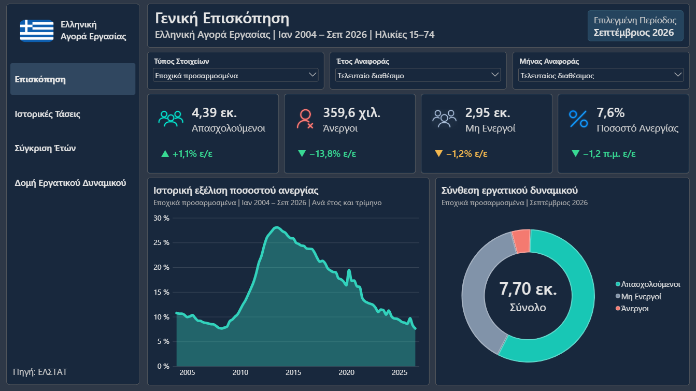
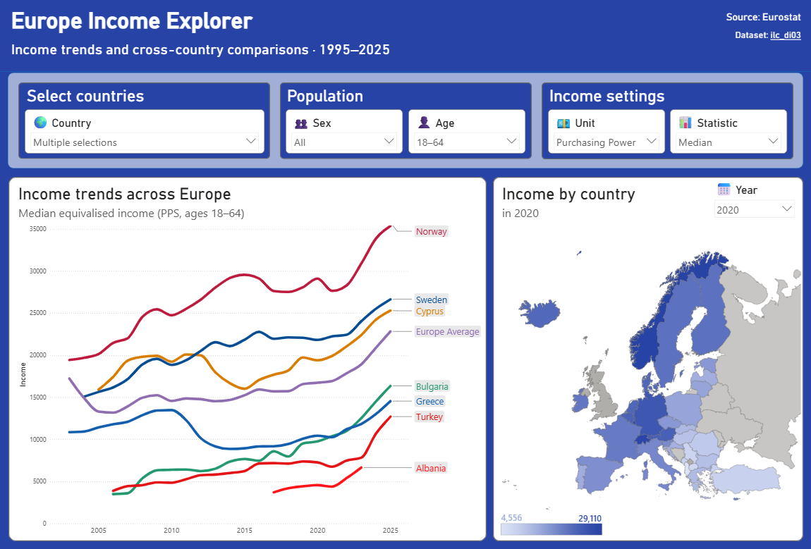
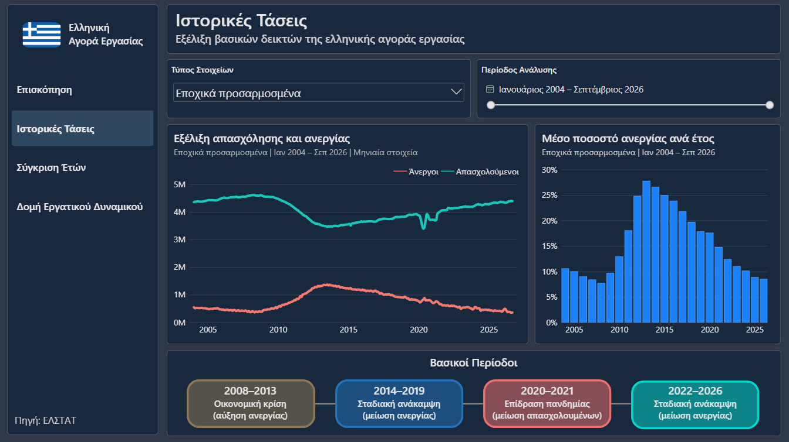
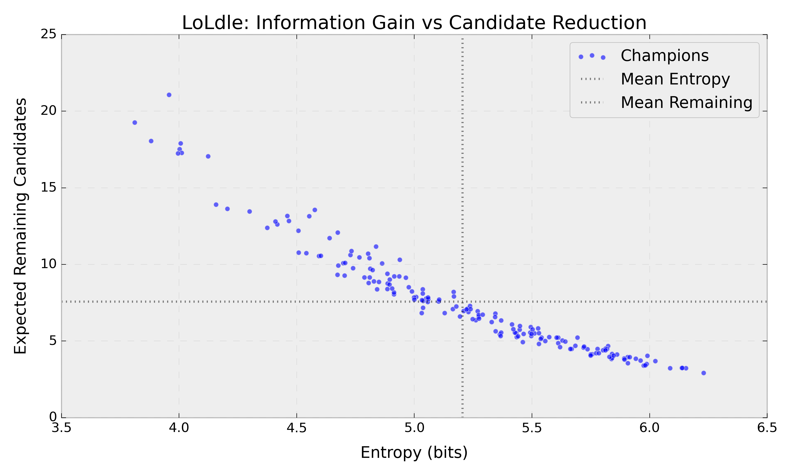

Data analysis &
business intelligence
I explore, clean and interpret data to find trends, define useful KPIs and turn business questions into clear recommendations.
Exploration · KPIs · ReportingData analysis · Business intelligence · Automation · Dashboard development
Data Analyst Thessaloniki, Greece
I make data easier to trust and easier to use. From the first messy file to the final dashboard, I turn business questions into clear analysis people can act on.

GREECE · LABOUR MARKETA practical approach
I work across the full path from raw information to a result that helps answer a real question.
I explore, clean and interpret data to find trends, define useful KPIs and turn business questions into clear recommendations.
Exploration · KPIs · ReportingI use Python, Pandas and SQL to shape inconsistent data into clean, validated tables that are ready for analysis.
Python · Pandas · SQLI use Python, SQL and spreadsheet workflows to make recurring data preparation and reporting tasks more consistent.
Python · SQL · ExcelI build interactive Power BI dashboards that help people monitor KPIs, explore trends and make informed decisions at a glance.
Power BI · DAX · Data modelsSelected work
Each project starts with a question and follows the data through to an answer.

EUROPE · 1995 TO 2025Eurostat data moves through a Python and Pandas pipeline into a PostgreSQL model, SQL analysis and an interactive Power BI report.
Explore project
GREECE · 2004 TO 2026A four page dashboard makes changes in employment, unemployment and participation easier to follow over time.
Explore case study GREECE · 2025
GREECE · 2025
Cleaned ELSTAT figures show how new buildings, surface area, building volume and storeys vary by region.
Explore case study
INFORMATION THEORY · PYTHONAn interactive solver ranks guesses by how effectively each one reduces the remaining set of possible champions.
Explore projectA little about me
I came to analytics through customer service and technology sales. That experience taught me to listen carefully, get the details right and explain solutions in a way people can use.
Now I bring that mindset to independent data projects. I enjoy the whole process, from preparing a reliable dataset to building a dashboard that makes the next question easier to ask.
Read my CVEducation
Vocational High School 2016 to 2018
Studied Python programming, networking, internet protocols, information technology and PC hardware and software troubleshooting.
Certifications
Tools I use